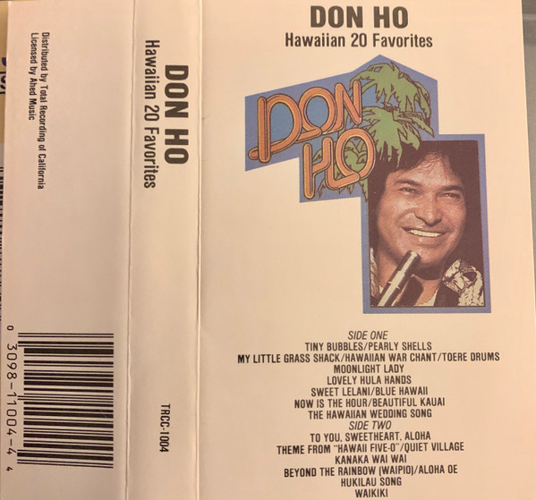

CASSETTE
Hawaiian 20 Favorites
Don Ho
Media: — · Sleeve: —
—
Personal
Discogs SuggestedCA$11.26
Discogs MedianCA$11.26
Discogs HighCA$11.26
- Physical Copy ID
- BB-CAS-158
- Year
- 1979
- Label
- Total Recordings Of California, Inc.
- Catalog #
- TRCC-1004
- Country
- USUS
- Genre / Style
- Pop, Folk, World, & Country · Hawaiian